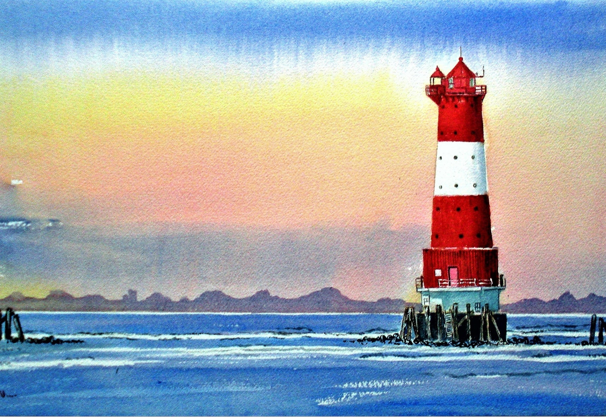

The Guiding Light was a challenge I made to myself to see if I could improve on the lighthouse concept that inspired me in week one using JavaScript instead of a pen and paper. For this piece, I focused more on symmetrical shaping through the use of code and utilized calm and light colors to guide my inspiration for a peaceful, simplistic, and eloquent depiction of an offshore lighthouse. I used mostly vertexes, curve vertexes, beziers, squares, circles, and rectangles to formulate the structure and placement of the lighthouse within a calm and tranquil sea.
